An overview of the JMVM / Sapl project and how all the pieces fit together — written as a readable guide alongside the 26 November talk at TOP Software. Each section summarizes the main idea without getting lost in benchmark tables, and links directly to the specialized factsheets for deeper technical detail.
jmvm.wasm, 65 KB gzipped)The starting point in July 2026 was a small IFL 2016 prototype: a ~1,500-line C bytecode interpreter (the JMVM) paired with a ~1,000-line Amanda compiler for Core Sapl. Four months later, the entire compiler, preprocessor, Hindley-Milner typechecker, module linker, REPL and interactive notebook environment are written in Sapl itself and run as bytecode on the same small VM — natively and inside a browser tab with no server or installation.
Only what must touch hardware or memory directly: 2-bit tagged values, a two-space Cheney copying GC,
a binary word loader (.jvb, giving ~6 ms REPL start-up), pack/unpack
value serialization, live chunk linking and three generated dispatch loops (musttail,
switch, goto) — 5,244 active lines in the browser build.
Everything language-related: the Sapl+ preprocessor, typechecker, self-hosting compiler gen1,
incremental linker, REPL, Haskell lite frontend, Clean ABC decompiler, and the sapl2c / sapl2wasm generators. In the browser, each notebook
cell compiles on change and links into the running session while keeping previously computed values intact.
Two design choices from 2016 mattered far more than anticipated. First, laziness in the VM is isolated to
just two instructions — eval (which reduces thunks on the VM’s own control stack)
and jmpt (constructor case jump) — leaving the rest of the VM a plain eager stack machine.
Second, between the source language and bytecode sits Stage-4 Retag: a clean intermediate
form where every decision about laziness (eval, thunk, closure,
! strictness) is explicit in the expression tree.
abc2retag) all meet at Retag, and
every backend only has to consume it.

You do not need to read every benchmark table to take away the main performance lessons from the project:
musttail dispatch (vs. switch in V8/Wasm), 7 load-time superinstructions, and replacing jmpt’s jump-table lookup with a predictable conditional branch after CPU hardware counters showed 93% of the gap vs. Clean’s interpreter was operand stalls.sapl2c): A three-day prototype compiling Stage-4 Retag directly to C (one C function per Sapl function) turned out to be roughly as fast as Clean native and GHC -O2 on benchmarks and self-compilation, and ~3× faster than the interpreter.clang -O2 compiler from JMVM bytecode (jmvm2c) left the program well behind Clean native and took roughly 10× longer to compile. From Retag, Clang sees whole functions with named variables and performs register allocation cleanly. On large typed Clean code (like the 2,700-function Clean compiler compiling itself via abc2retag), Clean’s native cg stays ahead (1.21×). Measured on 24 November, the missing types explain little of that on such symbolic code (~2–6%); most of it is runtime (GC work, thunk size). On integer loops types are worth 8–55%.jmvm2c reached 1.3×). From Retag it worked twice: the C of sapl2c through Emscripten is ~4× faster than the JMVM in wasm and 1.35× native, and r2w (sapl2wasm.cfp, ~1,000 lines of Sapl) writes binary wasm without C or clang at 1.13–1.18× the Emscripten result, with the whole chain running inside wasm. In Chrome, Firefox and Safari both are 3–4× faster than the JMVM and 3–8× faster than the best ABC interpreter.sapl2wasm.html picks it automatically there. The proposal is tiered execution: run direct, and restart on the explicit stack (the trampoline form in Safari) after an overflow. Restarting is only safe before anything irreversible has happened; node and a Chromium desktop app can set the stack limit directly.All code since July was generated by language models (primarily Claude Opus and Claude Sonnet, with supplementary runs on Gemini models), steered strictly by prompts, architectural choices and review. The project naturally split into two phases: an exploring phase (July to mid-September) to find out what was possible, followed by a goal-directed phase once the compiler became self-hosting.
Six backends were built and measured rather than argued over in theory (JMVM bytecode, bytecode-to-Wasm, bytecode-to-C, Retag-to-ABC, Retag-to-C and Retag-to-Wasm), alongside dead ends like direct ABC-to-JMVM, a whole-program Retag optimizer and bootstrapping MicroHs. Because writing code took hours instead of weeks, discarding dead ends and starting fresh was painless.
Speed alone produces brittle code. LLM output became dependable only through strict automated oracles: the compiler reproducing its own bytecode bit-for-bit (fixpoint), a typed Haskell port as an independent anchor, dual generators in Python and Sapl that must emit identical C and binary Wasm, and full regression suites on every branch — catching subtle errors (and even an aborted 38 ms benchmark run).
Rather than prescribing conclusions, the talk ends with four concrete questions for the Clean and iTasks
community — plus an honest list of what has not yet been measured (real iTasks applications,
compile time at scale, boxed arrays, records, ccall, dynamics,
compiled wasm in a real page with the stack fallback, graph compatibility, an iPad, and Windows):
abc2retag recovers it cleanly?
Develop the Clean → Retag route further — for JMVM (browser)
and native C (sapl2c) — until real iTasks programs run on it:
abc2retag over one real iTasks program to map missing ABC instructions, ccalls, floats, bit ops and dynamics.Real and bit ops, boxed arrays, ccall, pack/unpack in sapl2c, and per-module compilation.JSVal, callbacks) on jmvm.wasm first — then compiled wasm where speed matters.Measurements and findings from the last week before the talk, each with its limitations.
On 19 November three benchmarks from clean-llvm (Camil Staps, Steffen Michels, Dante van Gemert)
went through abc2retag + sapl2c. Measured as a ratio to Clean’s ABC interpreter
in wasm (abc-wasm, stock), because their numbers are from an x86-64 machine and ours from an M4.
This is a complementary data point, not a contest: clean-llvm deliberately keeps Clean’s exact heap layout,
so that graphs can be copied to the ABC interpreter; the Retag route uses its own tagged cells.
vs. abc-wasm | clean-llvm native (x86-64) | sapl2c native (M4) |
|---|---|---|
clausify | 0.18× | 0.14× |
lzw_encode | 0.19× | 0.19× |
fannkuch (n=10) | – | 0.11× |
main: clausify and lzw_encode needed a wider multi-value return in abc2retag that breaks the fixpoint of gen1, so it was not merged; the benchmark sources were lost.sort (why it is left out of the averages) and a wrong, varying result for hamming with many copying GCs (3,563,271 instead of 3,564,000 at -h 64M). Fine with few GCs or the compacting GC: probably the copying GC of the ARM64 runtime.ABC/Parse.icl: parseLine{|Char|} returns the position of the closing quote, not after it, so the optimiser cannot re-read its own output (reported in November).
Through sapl2c, the route via abc2retag is on average as fast as compiling the Sapl
version directly (1.02×). The outliers, measured on 24 November:
parsetest 1.32×: the Clean port is a slightly different program (pTerm xs = … rebuilds a parser on every call); the Sapl version with the same line allocates as much.knights 1.10×: Clean builds the list of moves lazily, and abc2retag keeps that faithfully (+77% allocation). Building it eagerly fixes it (0.96×), but was not merged: too little gain for the risk.sprimes 1.19×: heap locality. Via ABC allocates less, does no GC, and the data stays scattered; with a smaller start heap both are equally fast.primes 1.11×: unexplained; same calls, allocation and GCs.eval, ~1.5% on parsetest, −2.7% on the typed self-compile. The rest of the gap is runtime: parsetest spends 31% in the GC, and every thunk takes one cell more than in Clean.collatz 1.00×, sieve 1.16×, digits 0.33×).docs/2026-11-19_clean_llvm_vergelijking_rapport.md • docs/2026-11-22_allocatie_clean_tegen_retag.md • docs/2026-11-24_retag_met_extra_info_eval_parsetest.md • docs/2026-11-16_abcopt_char_parse_bugrapport.md